大家好，我是苍何。
几天前，我发了一篇纯文，简单介绍了下我基于 Obsidian 的创作工作流。不少读者表示很感兴趣。
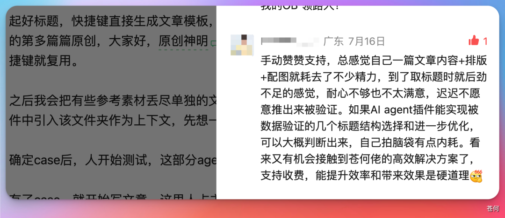
有点尴尬的是，上一篇还没说完就超字数了，真有点脱裤子放屁的感觉了。
之前很多文章，很多读者都希望我能分享这一套创作流程，于是，我打算用这一篇文章，好好做个分享。
由于内容过于干燥，请不要吝啬你的点赞和抓发。
工作流代码也已经开源到 GitHub，欢迎大家 star：
https://github.com/freestylefly/wesight-obsidian
首先，对于公众号这样的图文创作来说，有几个核心元素是可以借助 Agent 来帮忙快速实现的：标题、封面、排版、配图。
借助 Codex + Obsidian，就完全能实现创作-排版-发布-数据分析整个的完全闭环。
关于 Obsidian，苍何之前写过不少文章啦，简单说，它是一款本地化的双链笔记软件，所有文件存储都以 markdown 格式（AI 最喜欢了），且都存在本地，非常安全。
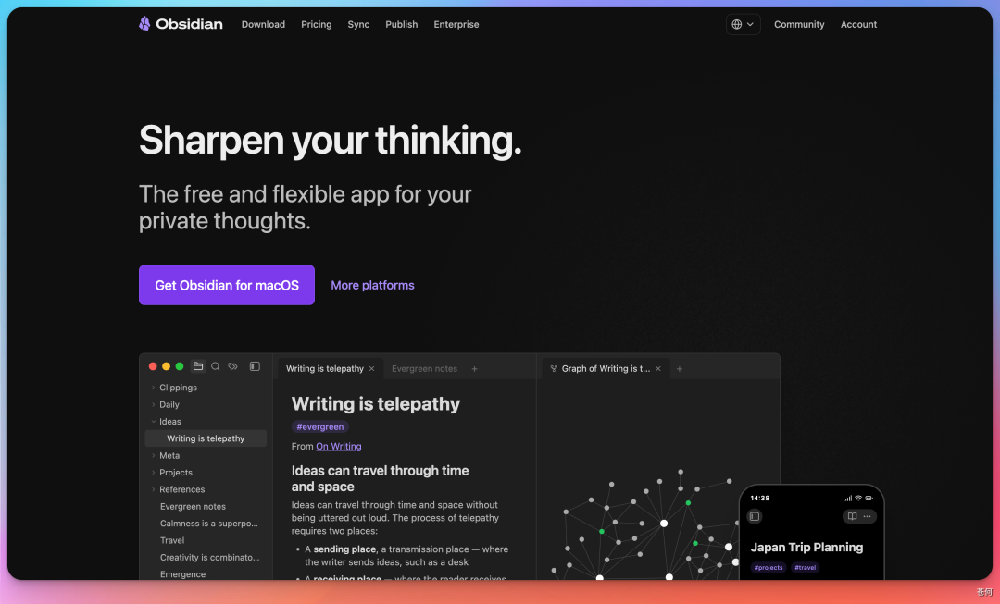
为什么要 Obsidian 来进行创作，除了本地隐私外，我认为比较重要的是，你可以完全把他当成 LLM Wiki 知识库，成为你和你的 Agent 的宝贵资产。
在 obsidian. md 免费下载后，新建一个 Vault（仓库）：
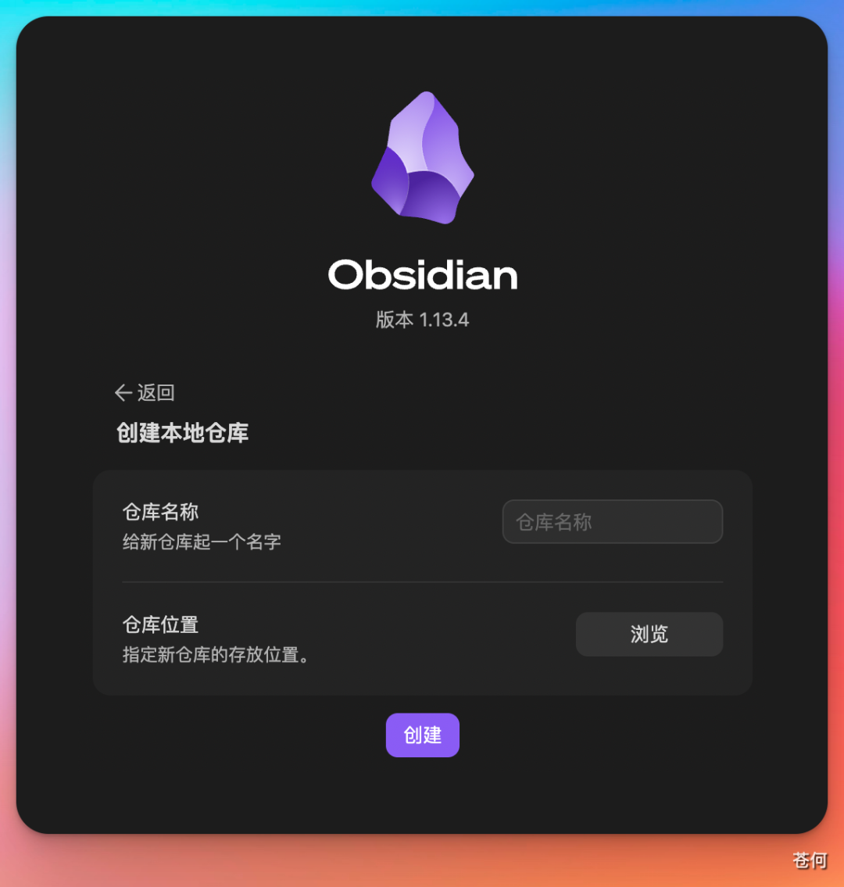
全程记得开代理，特别是访问插件市场的时候。
有了 Obsidian，接下来是怎么集成进 Codex，先说下为什么是 Codex。
除了能进行 Agent 读取知识库和笔记上下文外，Codex 内置了 GPT Image -2 生图，可以作为公众号封面设计、插图生成。
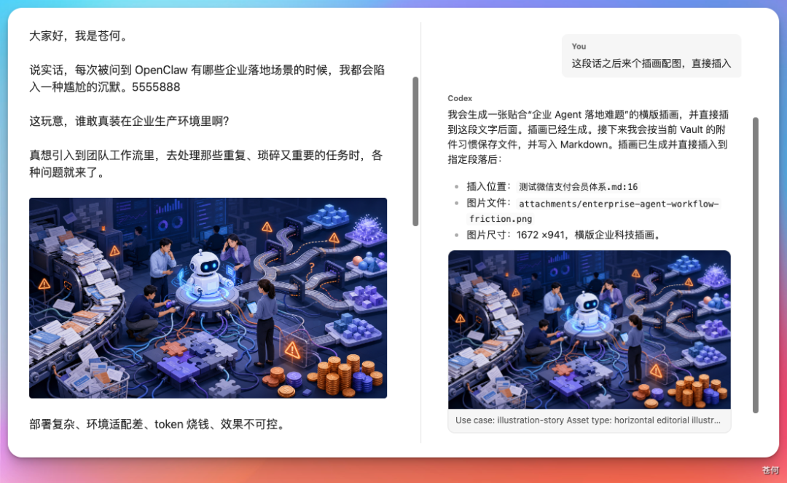
GPT Image -2 生图能力非常强，我的开源提示词项目现在也 9.2 k 的 star 了，非常的受欢迎。
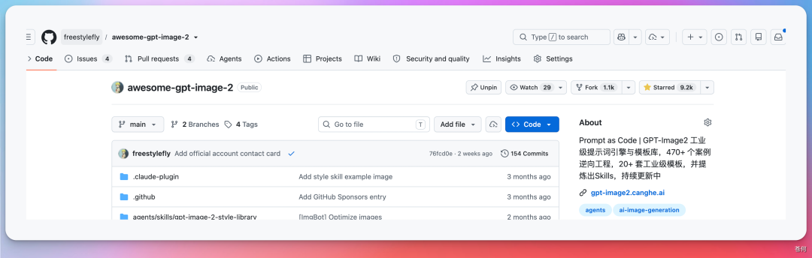
借助爆款封面，提取提示词，然后用 Codex 来生成封面，简单来说就是这个流程。
当然了 Codex +Obsidian 的组合方式很多，你可以安装 cli，也可以在 Codex APP 中安装 Obsidian 插件。
但这些我都觉得不够丝滑，因为我的创作内容更多的还是人来参与写，我要看到文字编辑区，我还需要那种所见即所得的可视感。
所以借助 Obsidian 插件是很好的一种形态。就像这样：
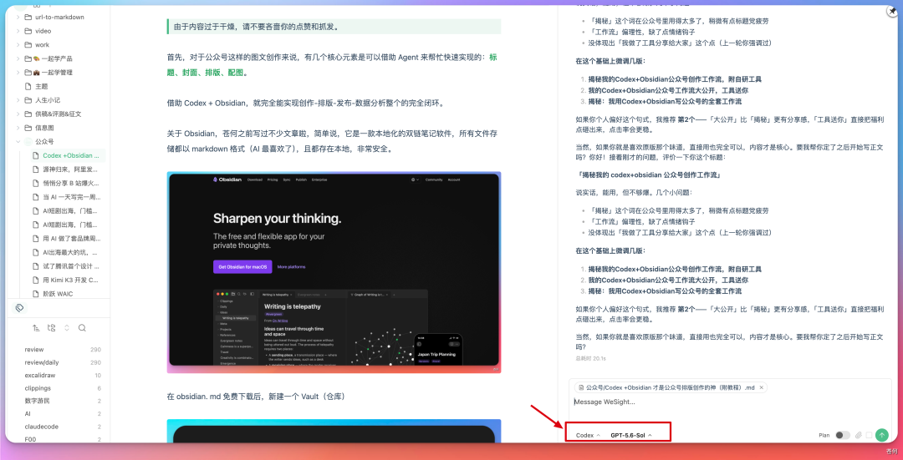
你可以在右侧 Chat 对话页，对当前文章进行辅助创作，比如润色、检索信息、文案优化等。
那种感觉，就像身边多了一位随时在线的创作搭档，灵感卡住时，它总能顺手推你一把。
比如我希望在文中这里添加一句话，直接对右侧的 Codex 说就好了：
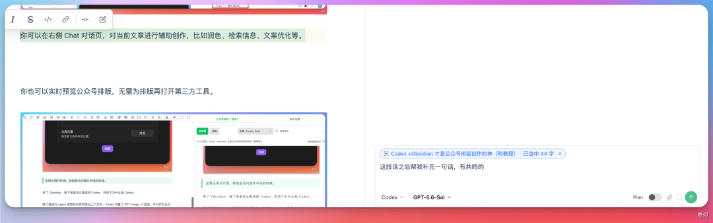
然后你就可以看到，刚才的这句话，被 Codex 直接插入到当前文章位置了：
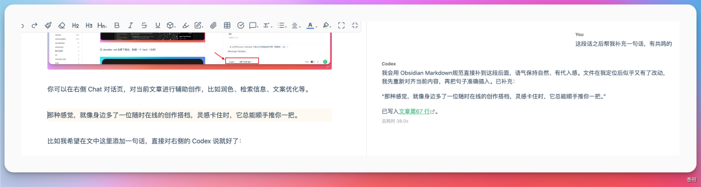
你也可以实时预览公众号排版，无需为排版再打开第三方工具。
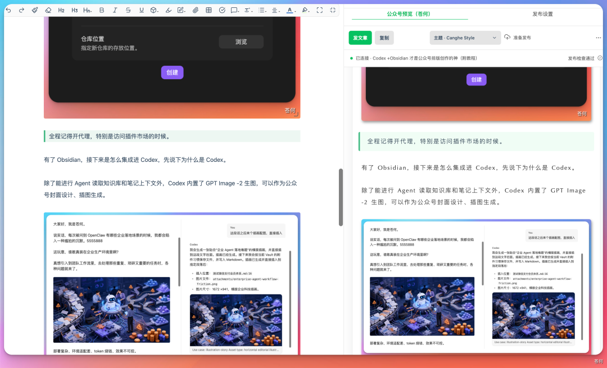
排版这里我把自己一直使用的排版也作为插件默认排版了，任何人都可以免费使用。
然后我还集成了甲木和小李的排版 Skill，现在你也可以在插件中免费使用。
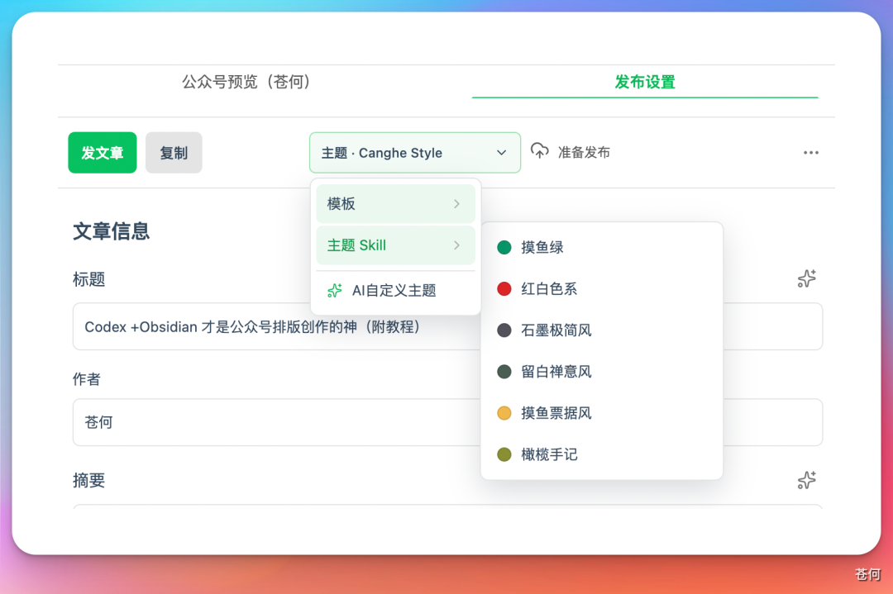
可以让 Codex 基于文章内容来实时生成好看的排版，甚至还能 Codex 自定义主题排版，就很香。
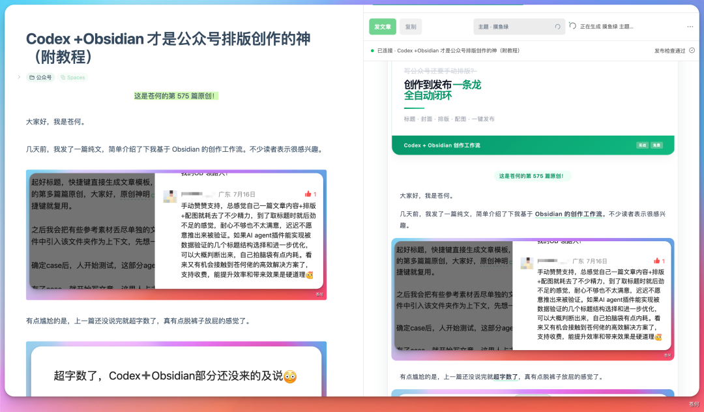
在预览右侧，你可以设置作者、标题、封面、摘要。
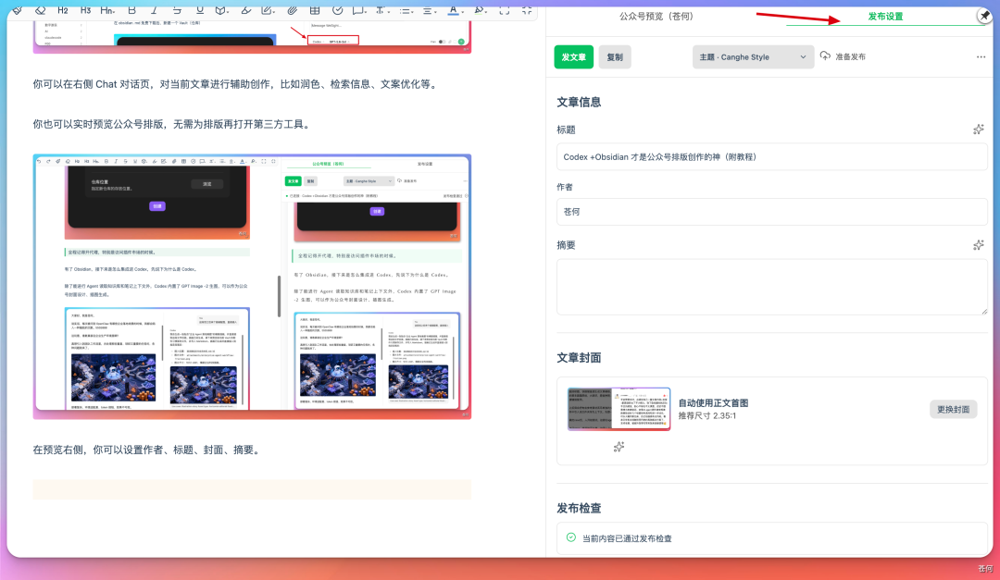
当然，你甚至可以借助 Codex 来生成爆款标题，它会基于当前文章上下文以及你本地 Obsidian 知识库来生成。
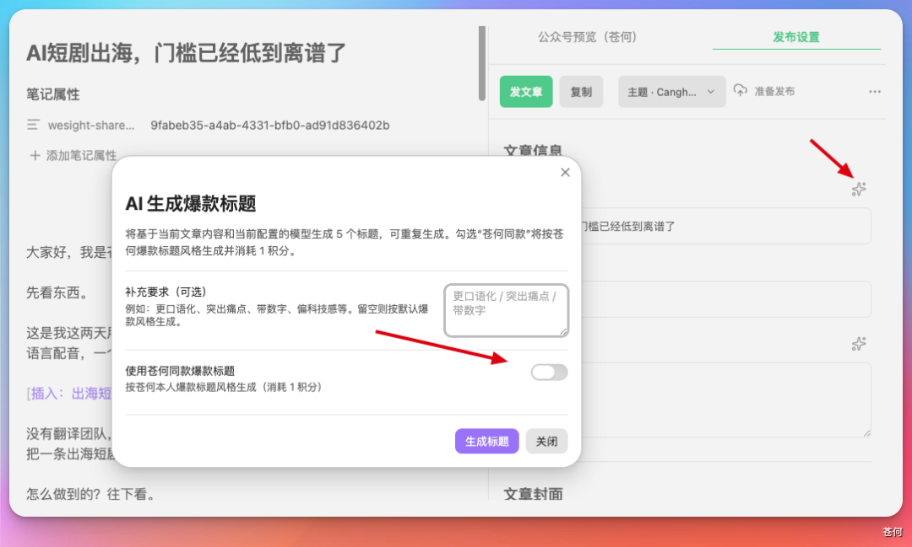
标题决定了公众号的阅读点击和推荐，所以一个好的标题直接就影响当前文章能否获得更多的流程。
但基于数据驱动的 harness 优化，是我认为比较重要的，我也写过不少 10 万加的文章，基于我的标题风格，我也提炼出了 Skill，勾选使用后，就能生成效果更好的标题了。
不过这块是增值服务了，感兴趣的也可以体验，哈哈哈。
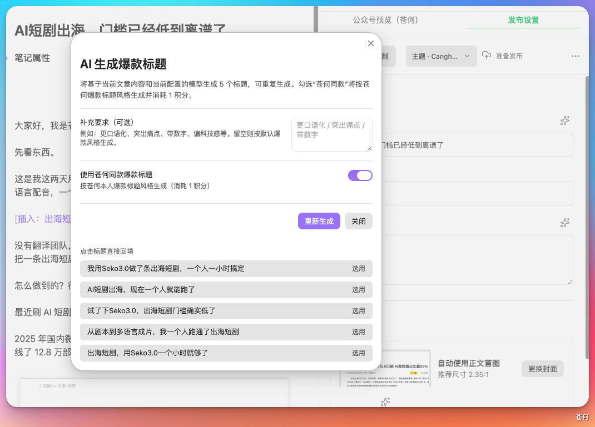
封面这里也是一样的，可以基于 Codex 来生成封面图，借助 gpt-image-2 的能力就很 nice。
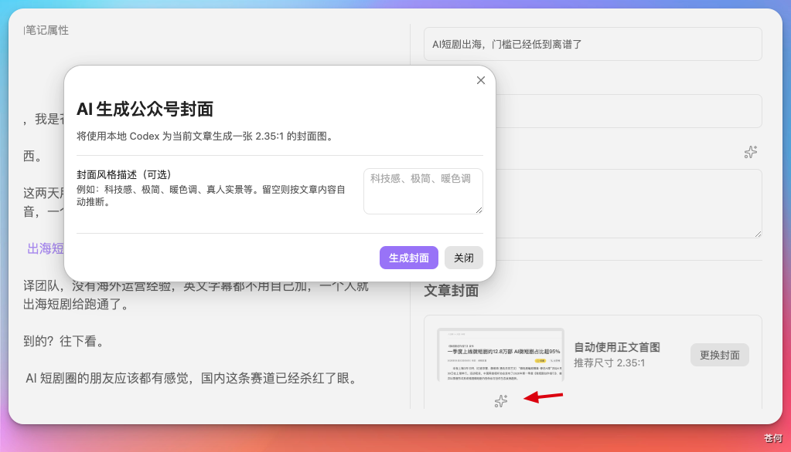
排版、标题、封面等关键信息确认后，你就可以选择一键发文章，就回同步到公众号后台草稿。
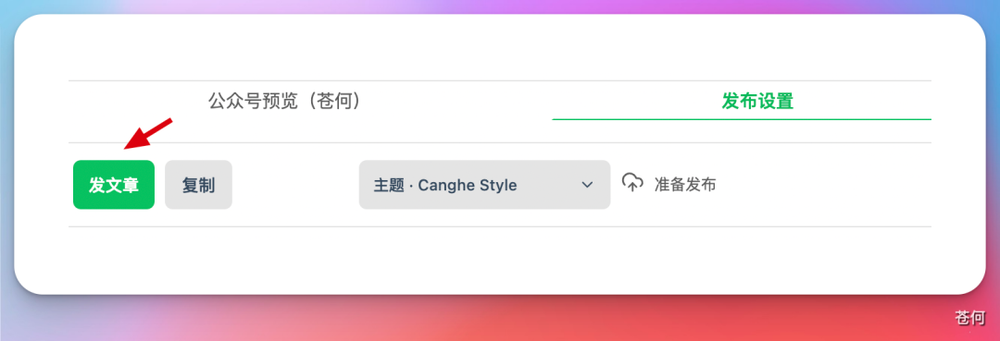
当然，你也可以点击「复制」，然后去后台新建一篇文章，然后黏贴进来，就会把排版格式什么的都搞定。
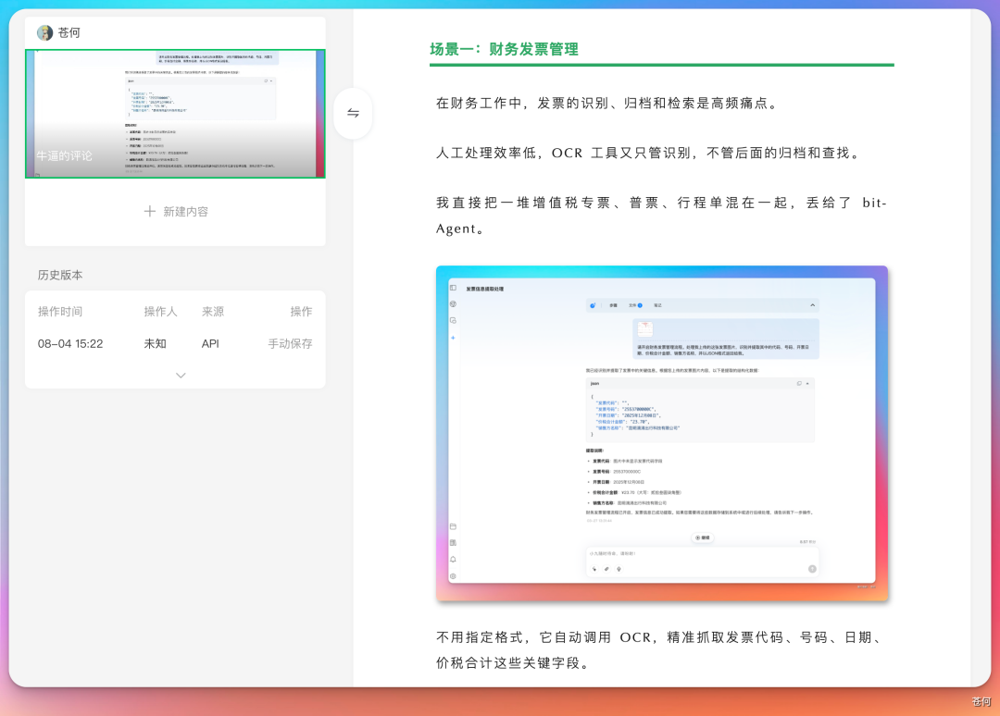
自动同步方便是方便，由于服务器成本，这里的发文章实际会消耗积分，不过现在新用户都有免费的 30 积分，完全可以玩了，具体配置的话可以看下插件官方说明。
这里有个小细节，在 Obsidian 中对文章进行了更改也是完全可以实时更新到公众号后台的。这对于经常改稿件的人来说就很方便。
当然了为了改稿需求，插件还有一个能力是可以一键把文章分享到互联网和飞书的，当你安装好插件后，在当前文章笔记的右上角有个分享按钮，点开。
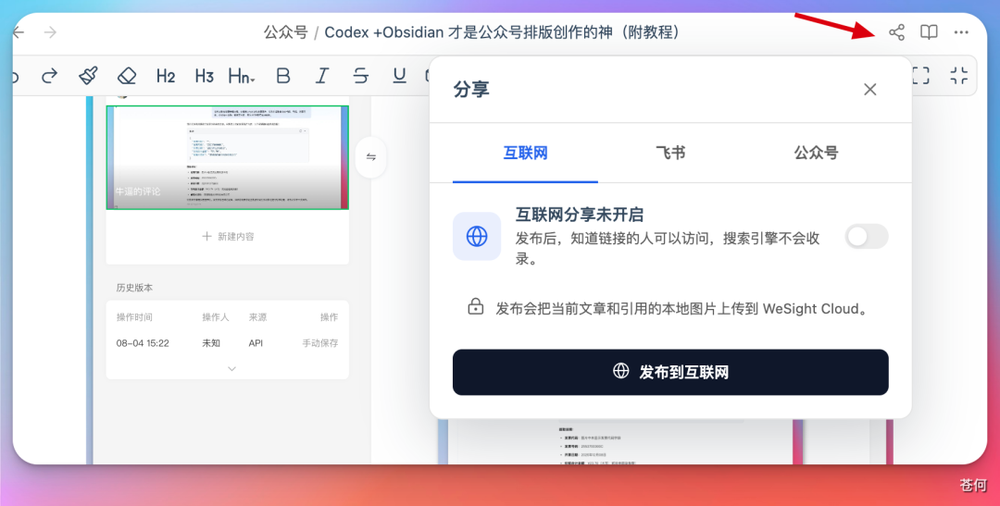
分享到飞书你只需要一键安装授权下飞书 CLI，ob 本地就能连接飞书，把笔记一键同步到飞书，然后分享给别人。
但是飞书同步过去是没法带格式的，很多时候，我们在公众号预览的时候，希望别人看到的是完整排版后的效果，但公众号预览是不方便评论的，别人得截图告诉你哪里有问题，就很麻烦。
这个时候也不一定先要同步到公众号后台。
你可以选择分享到 WeSight，然后别人就能看到带有排版的文章，也可以直接评论。
同样这个会消耗存储资源，也会有 1 积分的消耗，非常丝滑，大家可以体验下。
文章发布后，最头疼的是数据的跟踪，基于苍何之前开发的内容炼金台以及数据分析 skill，发布后，在插件中就能直接实时的看到当前文章的一个数据情况。
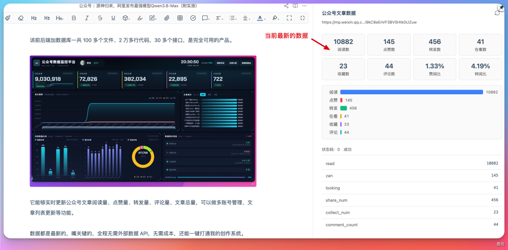
这个同样有 1 积分消耗，因为会耗服务器资源，哈哈哈。现在月会员最高赠送 100 积分，只要 15.9 元。
那如何安装这个插件呢，你新建好仓库后，在左侧设置打开「第三方插件」，选择「社区插件市场」。
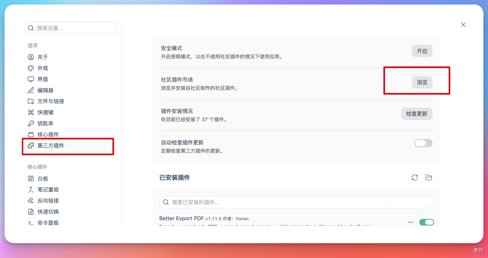
然后搜索：WeSight，就能找到该插件了。
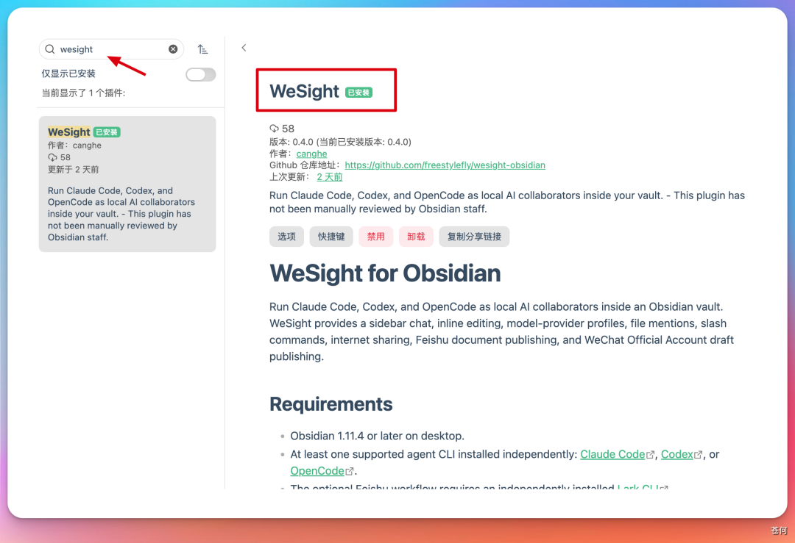
然后插件在 GitHub 上也已经开源：https://github.com/freestylefly/wesight-obsidian
安装好后，点击「选项」进入配置，你可以选择 Codex 模型，WeSight 会自动检测你本机是否安装 Codex，然后直接使用，包括 Skill。
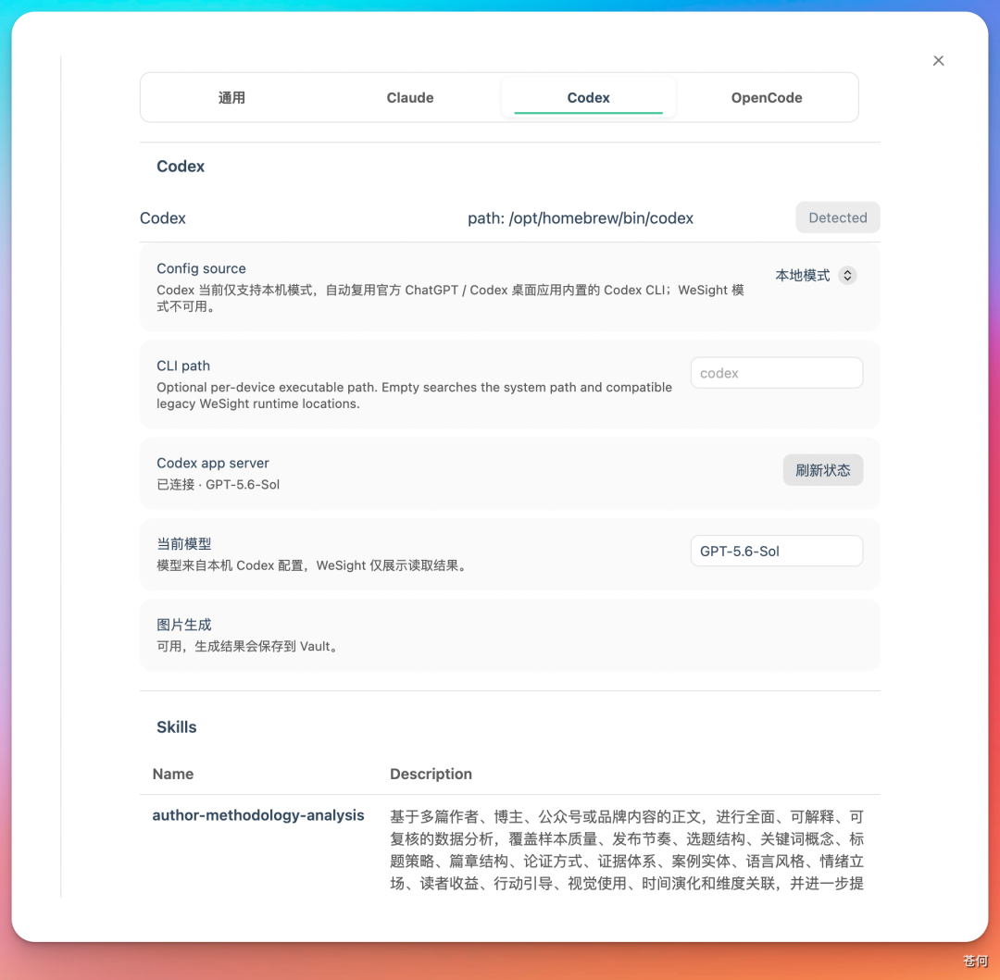
理论上，你就可以直接上手使用 Codex 了。
如果你想用自定义 API，你也可以直接喧杂 Claude Code，在插件里面就能直接配置第三方的 API，非常方便。
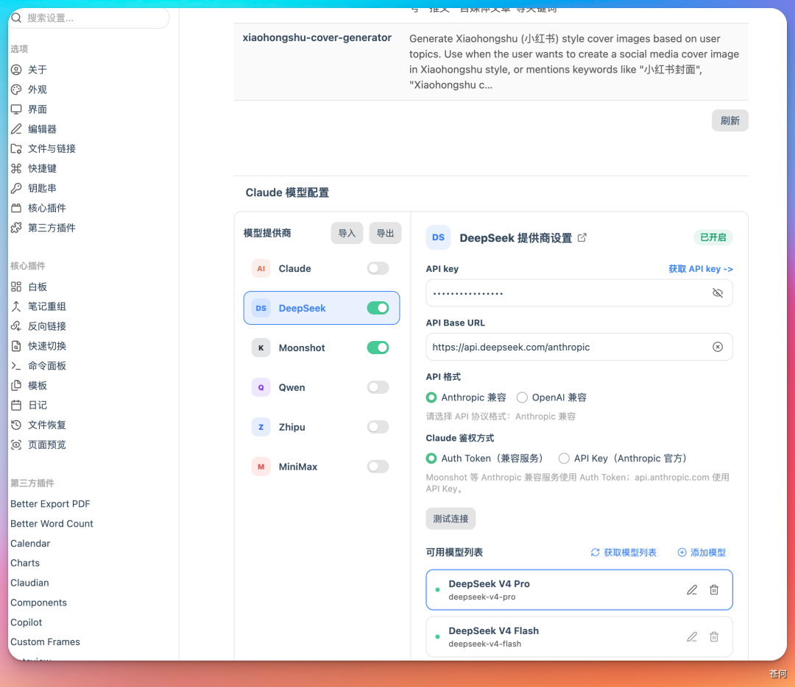
配置玩，你就能直接在这里各种切换了：
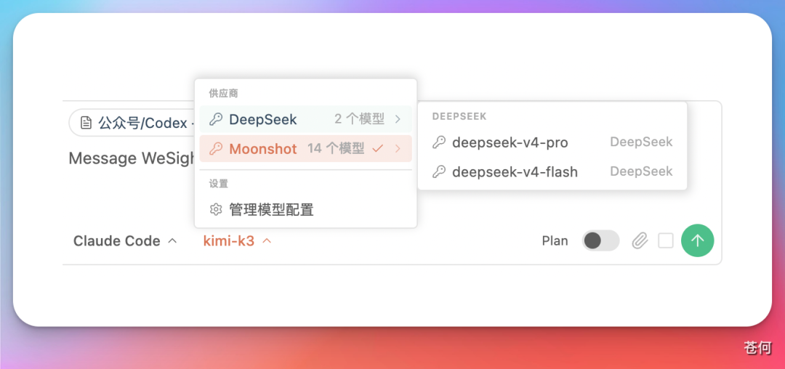
这个功能，WeSight 用户通过的都说好。哈哈哈。
这就是我一直在用的公众号创作工作流，也是我将自己的一些创作方法真正应用到产品层面，今天也正式开放给大家使用。
对于插件的绝大部分功能都是可以免费使用的，比如排版，Chat 对话，标题封面生成的，一些需要服务器成本的我才做了一点积分付费的逻辑在。
当然，我相信，WeSight 插件的价值，一定远不止于此，它和纯 Codex 去创作最大的区别是，他是人和 Agent 之间的无缝协作。
基于数据驱动去辅助做标题、排版、封面，把那些枯燥的耗费时间的事情交给 Agent，我认为是非常重要的。
插件本身是开源的，但有些增值服务需要耗费成本，就得积分，望理解。
现在加入创始会员后，还可以加入 VIP 专属交流群，一键使用苍老师同款 OB 插件和爆款标题库。获得专属答疑，哈哈。
说实话，我试了非常多的工具，WeSight 也学习了不少，今天，我把这份沉淀以产品的形式分享出来，希望能帮助到同样面临创作问题的朋友。
谢谢你喜欢我的文章，也谢谢你喜欢 WeSight，我们下一期见。